Trabajos de Informatica de Hector y Kevim
Este traba era para ver los encabesados y los tipos de texto
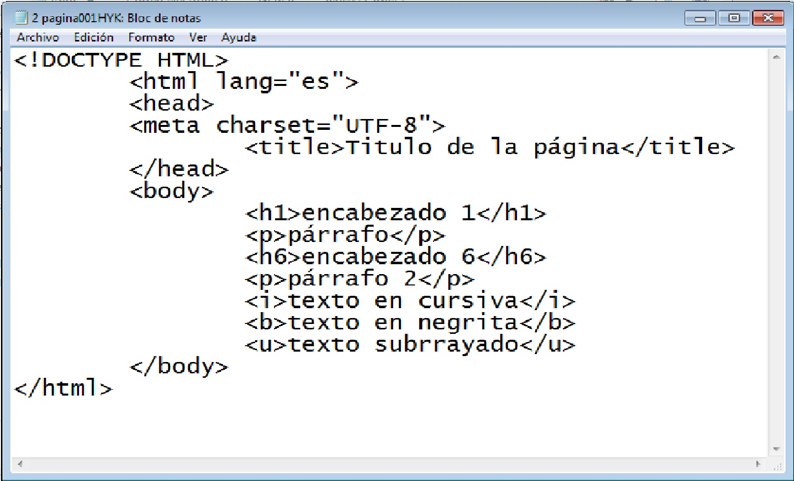 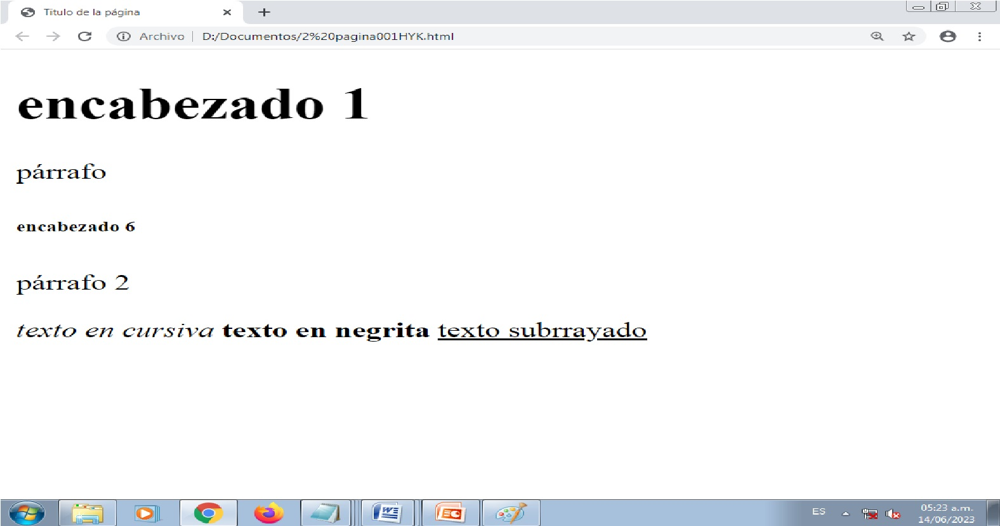Este trabajo era para saber el codigo css
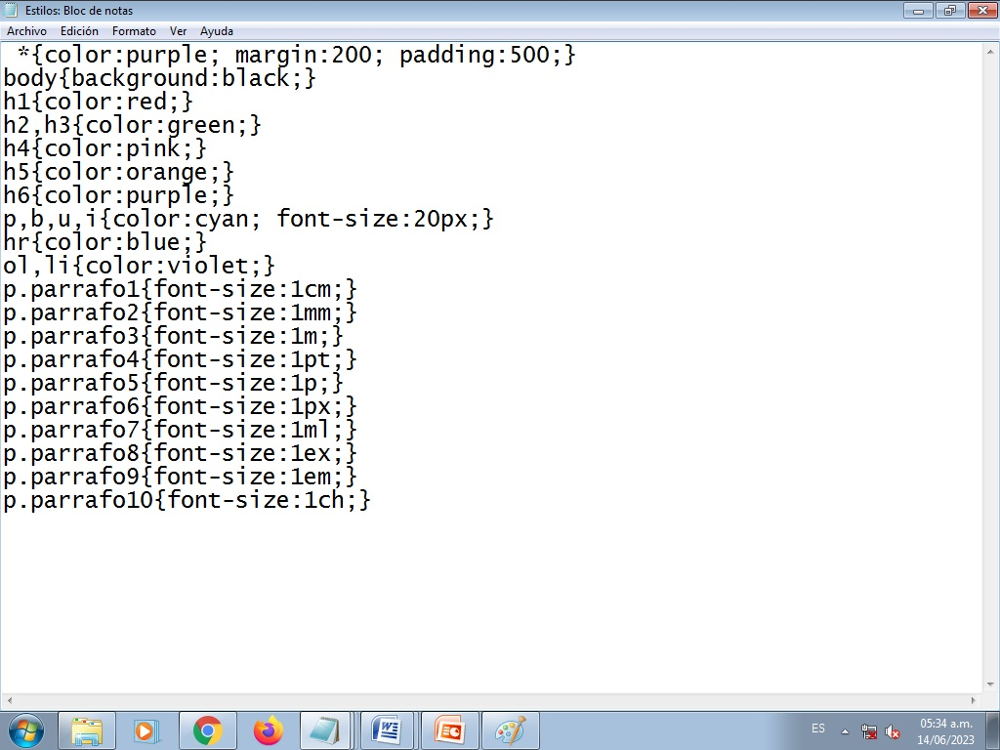Este trabajo era para tener a la mano los inicios de una pagina web para solo copiarlo
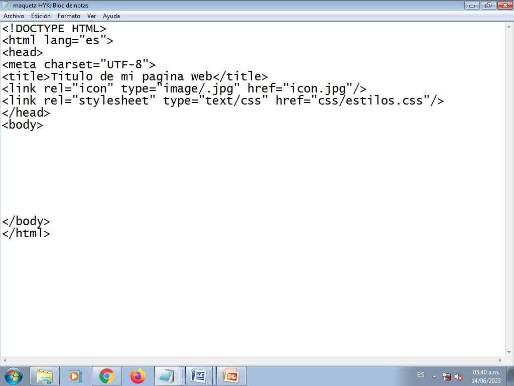Este trabajo fue la primera ves que mandamos a mandar a llamar un archivo css (perdon por la calidad de la imagen)
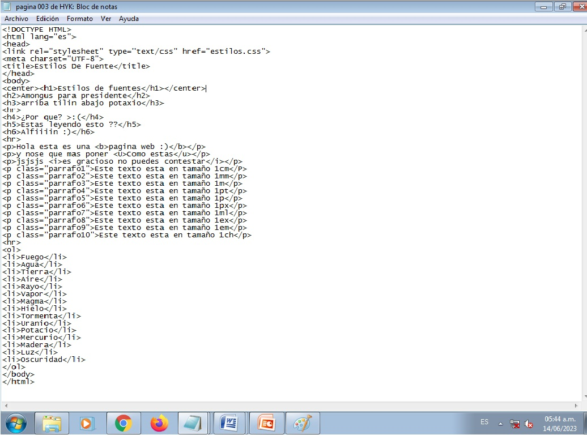 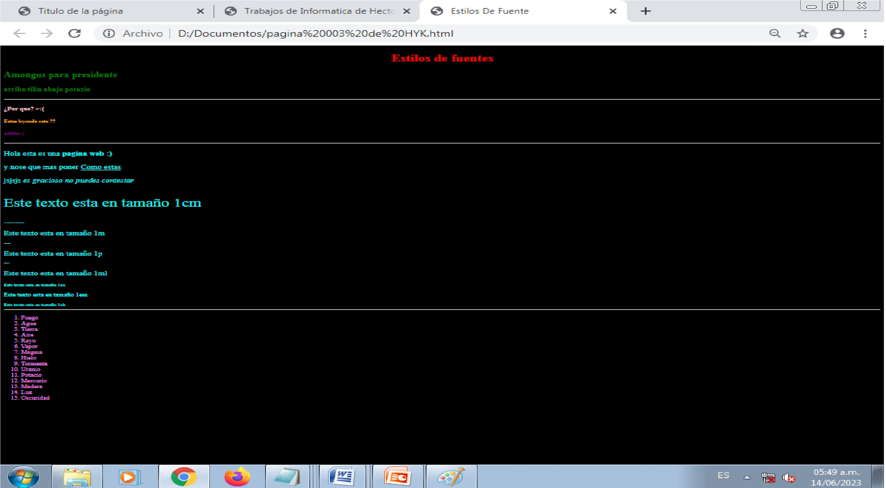Este trabajo era una pagina que llamaba a un archivo css pero no funciono
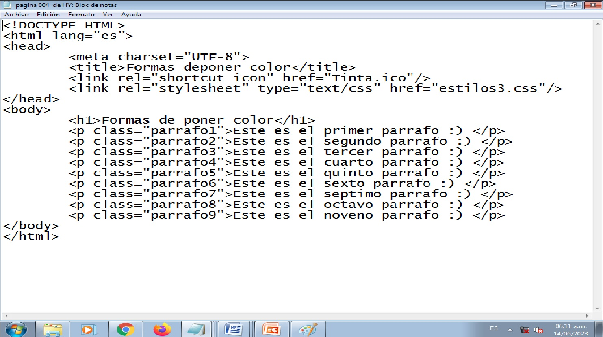 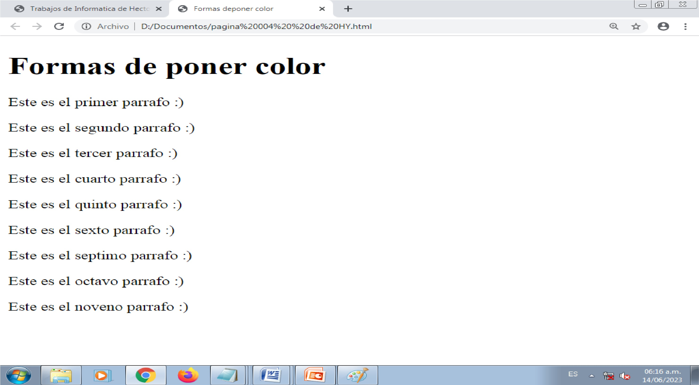Este trabajo fue una pagina web x
 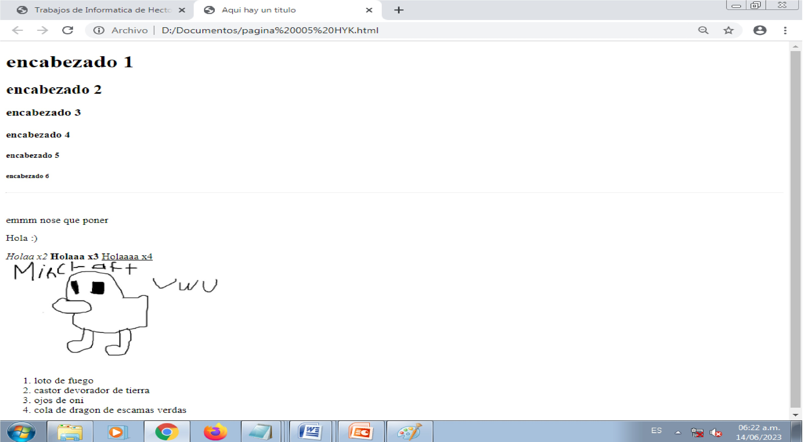
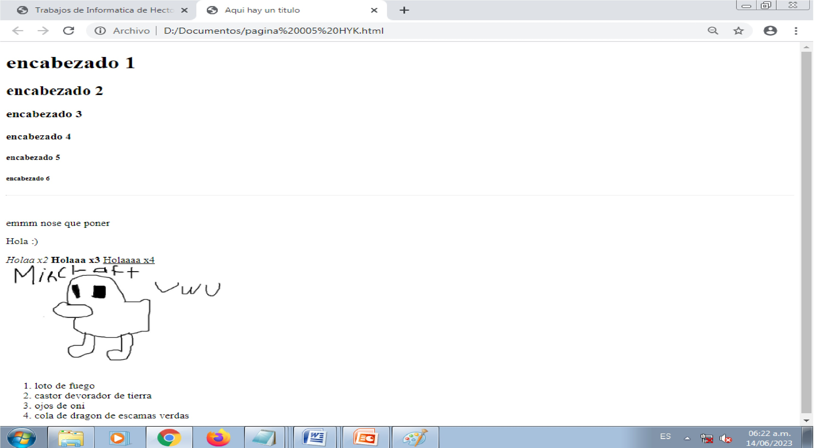
Formas de poner el color rojo
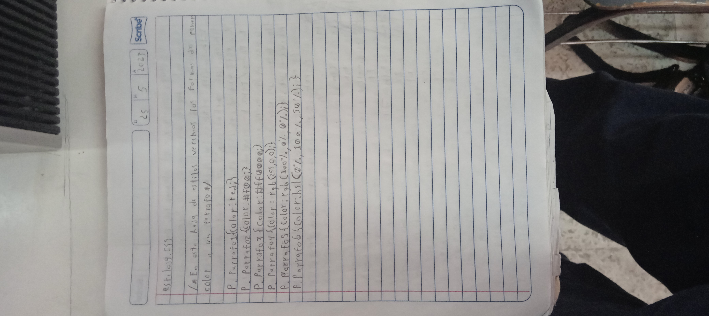Esta fue la indicacion de este trabajo
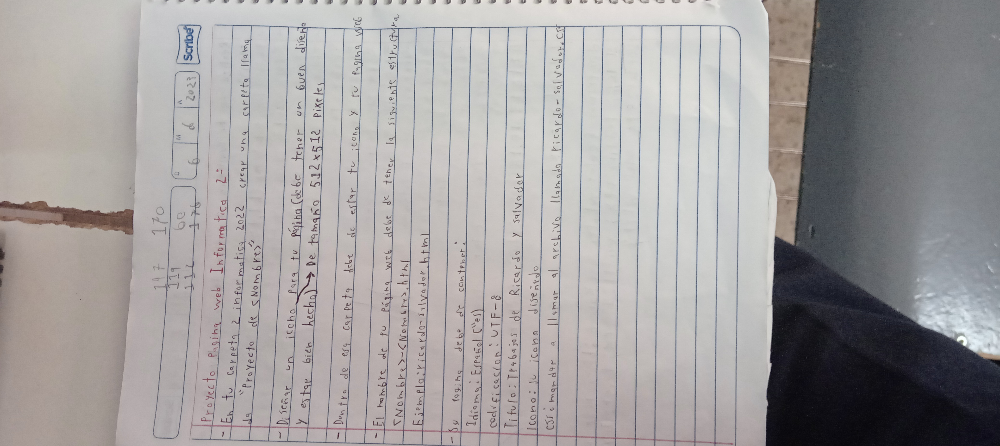Esta fue una pagina donde utilizamos varios codigos
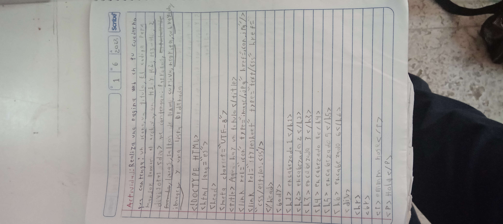 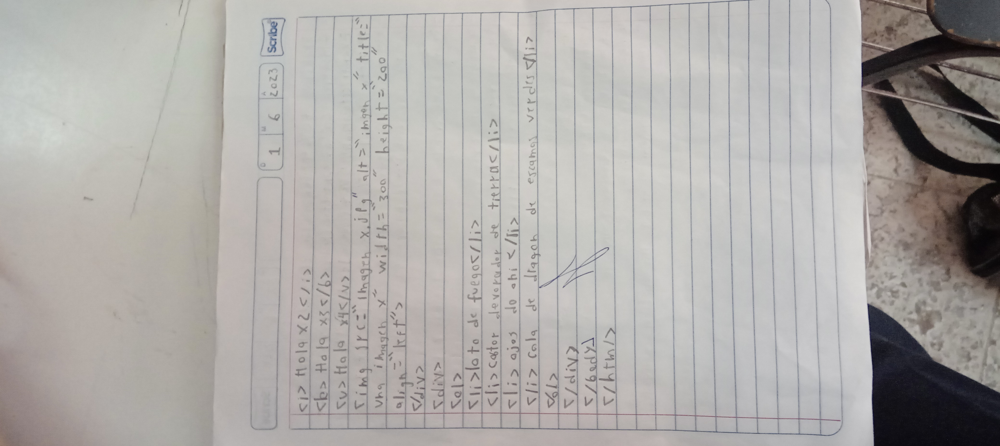Esta fue una pagina web x
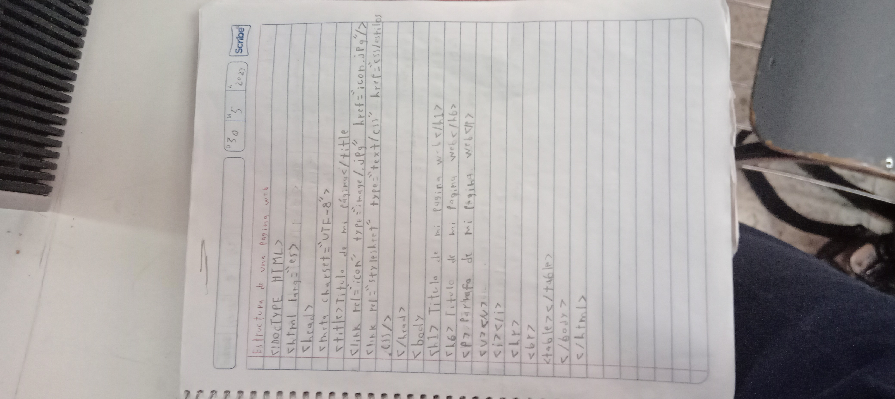